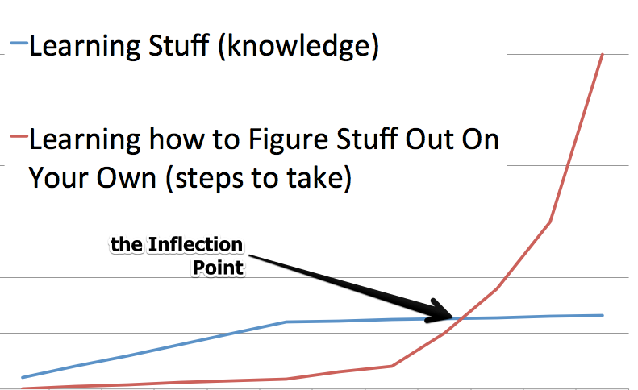

week-1
Algorithm
- 暴力求解：直接双重遍历去找是否存在与当期值加和等于目标值的元素，时间复杂度 O(n2) ，空间复杂度 O(1)
- 哈希表：构建
值-索引的键值对，然后遍历去找与当前值匹配的对应值，当然更好的方式是边构建边往回找目标值，时间复杂度 O(n) ，空间复杂度 O(n)
class Solution(object): def twoSum(self, nums, target): """ :type nums: List[int] :type target: int :rtype: List[int] """ nums_dict = {} for index, num in enumerate(nums): if target - num in nums_dict: return sorted([index, nums_dict[target - num]]) nums_dict[num] = index return []
Review
本文来自 OpenAI 联合创始 Sam Altman 的博客，他分享了关于工作中提高效率的几个观点，原文戳此。
推荐阅读：Sam Altman’s Manifest Destiny
Altman 比较注重复利的力量，我在其另外一篇文章中也看到过相关的观点。当然复利是一个金融概念，每天的成长和每一次的突破都会成为未来发展的基础。 因为时间和再投资是影响复利的重要因素，所以越早开始投资自己，持续的输入输出，达到某个临界点时，成长曲线就会开始陡峭增长，价值回报就会出现质的飞跃。 虽然此文不是技术类文章，但作为开篇文章，希望 ARTS 计划给自己带来复利的力量。
- 知道要做什么
知道要做什么，做自己喜欢的事，这一点非常重要。如果自己不清楚自己要做什么，方向不对，再努力也是徒劳，只会事倍功半。当然，在实际工作中，我们每个人的工作或多或少 都会有些不如意，这就需要区分这些时刻的频率和持续时间。如果只是暂时的或者通过调节、沟通能够解决掉的，这种自行调节便可。作者提到了委派，可能有些工作你不喜欢做，但其他同事比较感兴趣， 那么在可行的情况下，委派他人或者合理的调动，当然这一点在实际中操作条件各有差异；如果是长时间无法跳出来，从根本上无法解决的情况，那最好还是换个工作吧。现在是一个协同合作的社会，所以同事也很重要， 多和聪明、积极向上的同事交流合作，避免与经常释放负能量的人接触。
- 优先级
作者会对自己的工作指定优先级，先做最重要的事。作者使用纸笔直接罗列 TODO，顶多用星星区分优先级，这种做法我非常赞同，目前市面上各种效率工具五花八门，功能也非常繁多。我们其实要避免陷入到 效率旋涡中，不要花费太多精力去做一些没有太大意义的事，比如：如何更完美的分组，哪一个 app 更好用、更好看，如何使用非常复杂的时间流去等等，我们要把关注点始终应该放在如何高效的做事，而不是如何更好地提高效率本身上。 还有，不要只做计划或者做太多详细的计划，如果是未来比较远的计划，可以做的简略一点。更多的关注近期，并制定可执行性较强的计划，让自己处于适当忙碌的状态，这样更容易有种紧迫感，促使自己更好地完成任务。
还有一点是，不要为了省钱，去做一些不想做、没必要且浪费时间的事。时间是最公平和最宝贵的资源，合理地充分利用时间就是省下了最大的一笔钱。这一点，在我搬到公司附近住以后，深有体会。
- 身体因素
这一点无需多言，好的身体是革命的本钱。适量的运动和合理的膳食非常重要，前段时间自己做一段少油少盐的餐食，虽然在口感上有些无味，但身体感觉会轻盈一些。减少糖分的摄入，饮料最好别喝，这是我的一些小建议。
当然，不要忘记家人和朋友。
Tip
分享两个 git 小技巧：
git branch |grep 'branchName' |xargs git branch -D，可以用于批量删除本地分支- 通过安装 git-toolbelt，简化 git 命令， 比如：直接使用
git fixup来替代git commit --amend，不会再进入编辑界面。
Share
The Key To Accelerating Your Coding Skills
我觉得每个开发者去读这篇文章时，都能找到自己所处的阶段，文章也比较准确地描述了开发者在学习编程过程中，每个阶段要突破的增长点。
经历前面几个阶段之后会达到技术的 拐点 ，如果我们可以跨过拐点，那编码能力就会出现飞跃式提高。

- 教程阶段
学习一门新的技术或语言，首先要去看教程，知道一些基础的概念和基本的语法，然后根据示例或者教程去完成一些特定的任务。在这个过程中 我们肯定会遇到很多问题，然后重新翻阅文档或者 Google 一下去找寻解决方案；也会碰到很多报错，这个时候在解决报错的同时也要去细究 其背后的原理；在这个阶段，可能也会有同事或导师帮助或指导你该如何去完成任务。随着时间的推移和代码量的增加，我们会完成对特定领域 知识的学习和使用，知道如何去解决问题，也可以根据过去写过的代码对当前的任务进行关联或复用。
- 拐点阶段
拐点阶段可能会比较难熬，这一点要做好心理准备去迎接挑战。这一阶段，可能开始需要我们自主去承担一些任务，提出解决问题的方案。在编码 时间上可能会比上一阶段慢很多，同时也需要我们跳出自己的舒适区，去寻求一个突破，去尝试完成高于当前能力的工作，这个时候可能就需要我们 自己去弄清需要学习什么知识，要用哪些技术来解决什么样的问题等等。这是技术上的突破也是心理上的突破，所以，也要适度地调整心态和强度， 不要过度地紧绷和消耗身体，这样才能循序渐进的迈过拐点。
在 web 开发领域有两个拐点：
- web 开发拐点：能够熟练掌握
CRUD，并能够调用第三库完成数据驱动的应用。 - 数据结构和算法拐点：能够熟练使用并理解各种算法，并且掌握对排序、队列、栈、链表等的实现与操作
编程是一个终身的事业，我们永远学不会所有的知识。所以从大局看来，特定领域的知识意义没有那么大，我们要寻求的是找到过程中的拐点，并且迈过它。